Regions · Africa
Africa fashion forecast
A young, fast-growing fashion continent: Lagos and Johannesburg as design capitals, bold prints and colour, and craft-led, circular production.
Global forecast · Updated 31 Oct 2026

Both hemispheres
Nigeria & West Africa, South Africa, North Africa, East Africa
Lagos Fashion Week (28 Oct–1 Nov 2026, theme "CRAFTED") · South African Fashion Week (SS26 shown Mar 2026; AW27 shown Oct 2026, The Forum, Hyde Park) · Casablanca and Cairo events · Nairobi events
Season by season in Africa
International seasons (SS, Pre-Fall, AW, Resort) with Africa's own in-store timing, Forecut's regional direction, and the global trends that suit this market.
In Africa stores: North & West Africa: Aug 2026 – Jan 2027 · South Africa: Mar – Aug 2027 (local autumn/winter) · Global AW26 report →
- Rich, maximal and tactile. Big outerwear, sharp tailoring and heavy embellishment, with 1920s glamour running through evening and footwear.
- Regional reading: lead with the AW26 trends below that suit Africa's climate and buyers.
Global trends to lead with in Africa
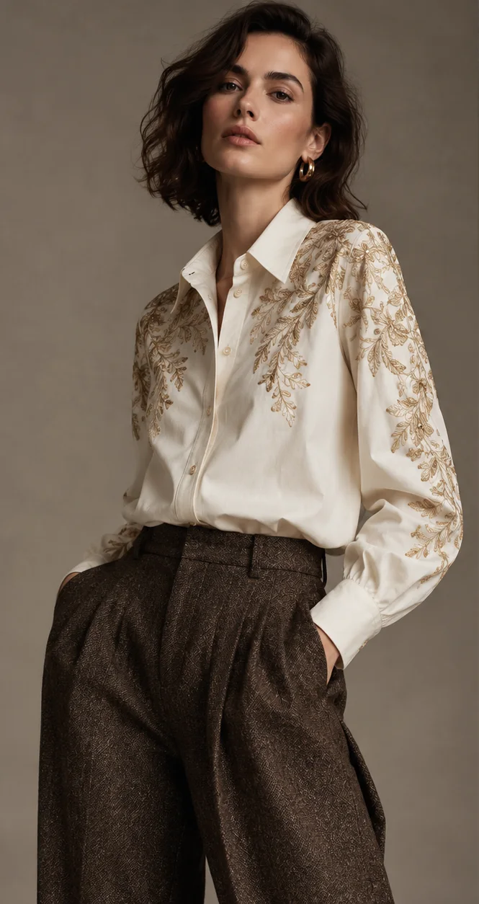
Emerging
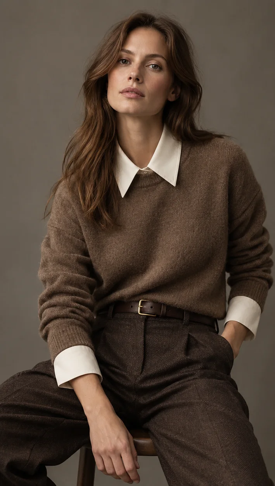
Rising
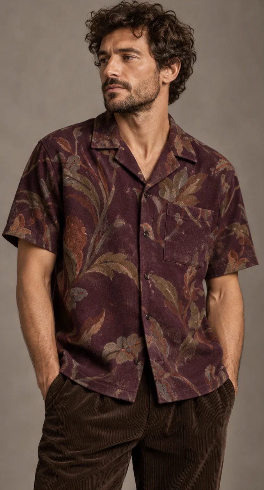
Rising
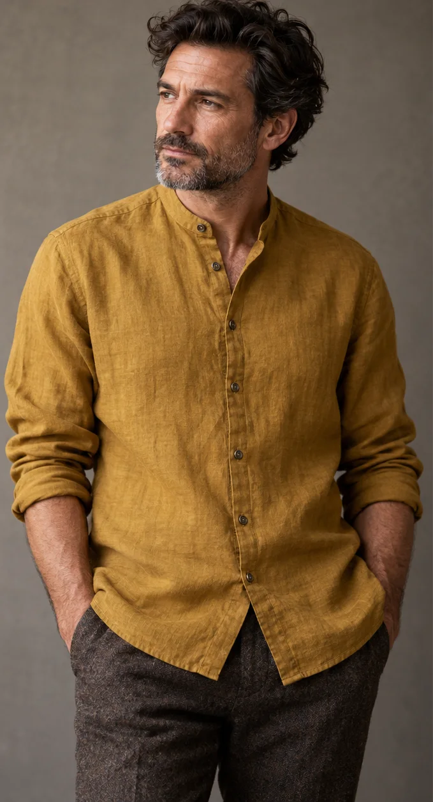
Rising
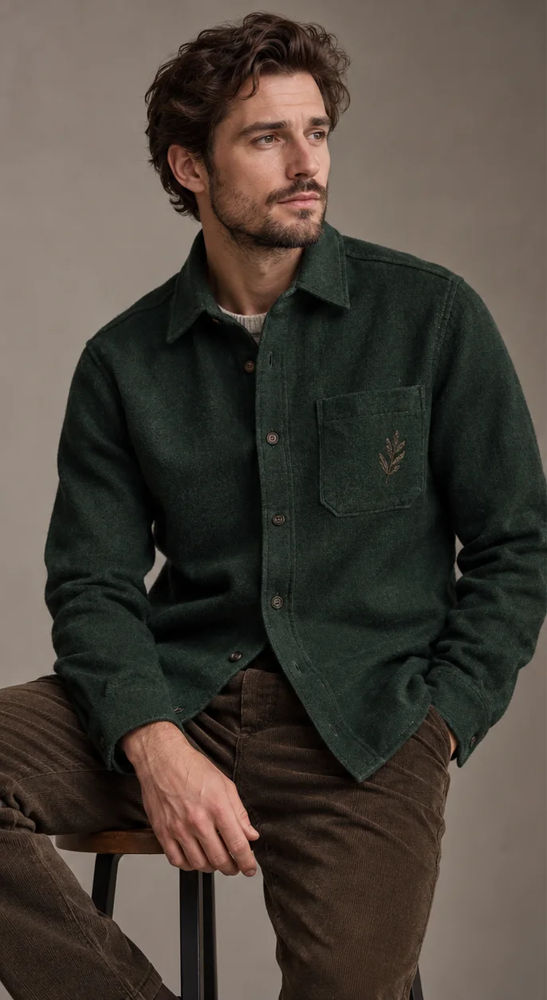
Rising
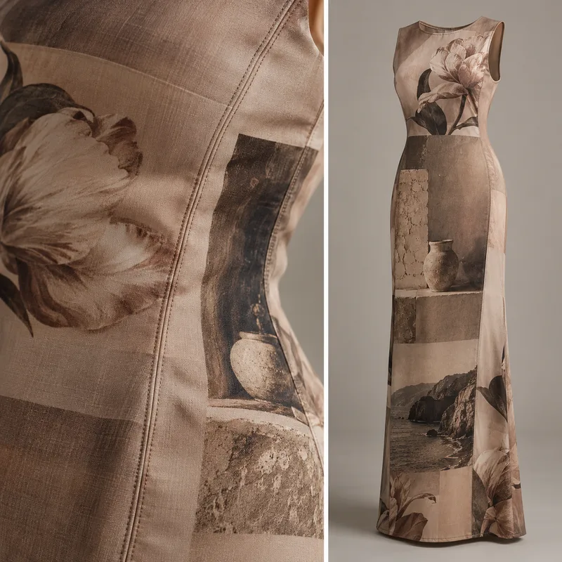
Emerging
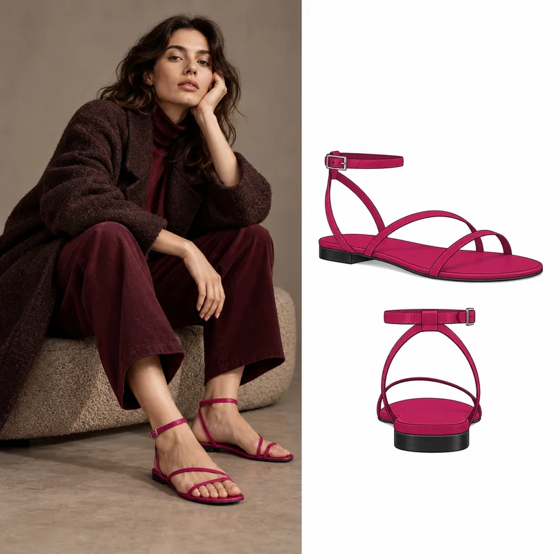
Emerging
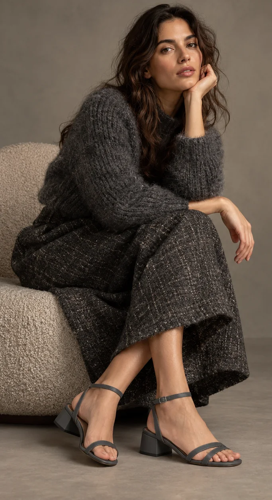
Emerging
In Africa stores: North & West Africa: Nov 2026 – Jan 2027 · South Africa: Nov 2026 – Jan 2027 (local summer: peak resort season) · Global Resort 27 report →
- Year-end wedding, festive and holiday wardrobes
Global trends to lead with in Africa

Rising
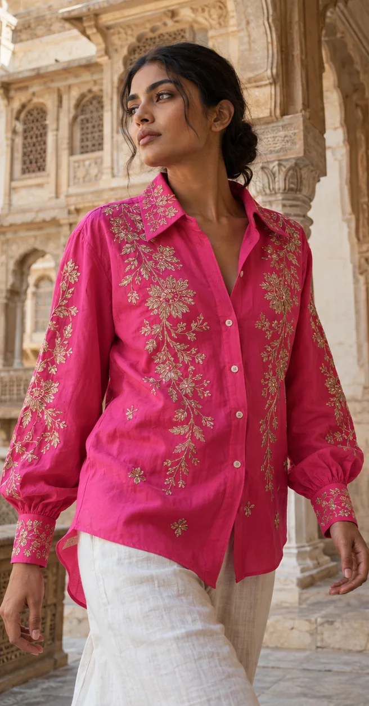
Rising
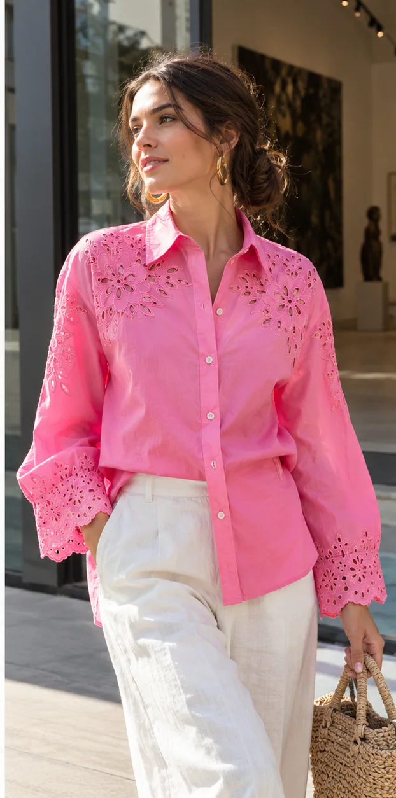
Rising

Rising

Rising
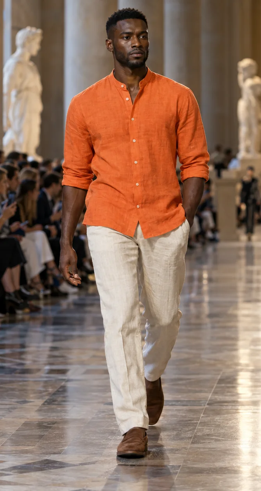
Rising
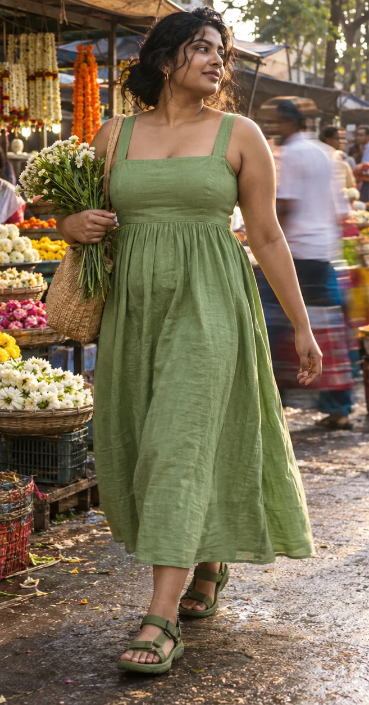
Emerging
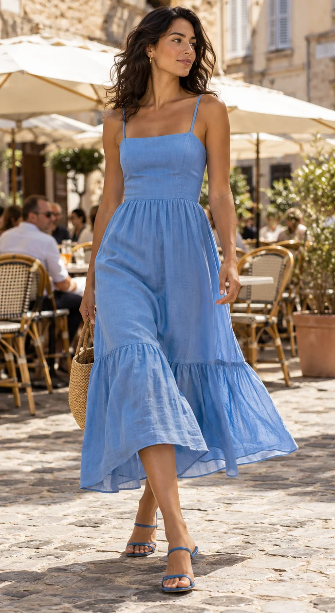
Rising
In Africa stores: North & West Africa: Feb – Jul 2027 · South Africa: Sep 2027 – Feb 2028 (local spring/summer) · Global SS27 report →
- Cinched waists and volume: puff, bubble and peplum shapes
- Bold colour and print; chocolate brown as a neutral
- Craft and heritage textiles in contemporary tailoring
- Lagos FW 2026 (Oct): beaded and raffia fringe, red and brown, peplum bustiers, skirts for men
- Lightweight fabrics for hot climates
Global trends to lead with in Africa
Rising
Rising
Rising
Rising
Rising
Rising
Emerging
Rising
In Africa stores: North & West Africa: May – Jul 2027 · South Africa: Feb – Apr 2028 (local autumn transition) · Global Pre-Fall 27 report →
- Regional reading: lead with the Pre-Fall 27 trends below that suit Africa's climate and buyers.
Global trends to lead with in Africa
Rising
Rising
Rising
Peaking
Peaking
Rising
Rising
Rising
In Africa stores: North & West Africa: Aug 2027 – Jan 2028 · South Africa: Mar – Aug 2028 (local autumn/winter) · Global AW27 report →
- West Africa: occasion and festive (Detty December) rather than cold-weather wear
- South Africa: AW27 trends sell in local winter, Mar–Aug 2028
- South Africa AW27 runway (SAFW, Oct 2026): kaftans, capes and blanket wraps, A-line shapes, handcrafted and unisex denim, ochre, azure and orange-blue palettes
Global trends to lead with in Africa
Rising
Rising
Rising
Peaking
Peaking
Rising
Rising
Rising
In Africa stores: North & West Africa: Feb – Jul 2028 · South Africa: Sep 2028 – Feb 2029 (local spring/summer) · Global SS28 report →
- Long-range outlook. Structured clarity and easy movement: fewer, better pieces with performance comfort for commuting, anchored by a warm earth orange.
- Regional reading: lead with the SS28 trends below that suit Africa's climate and buyers.
Global trends to lead with in Africa
Rising
Rising
Peaking
Peaking
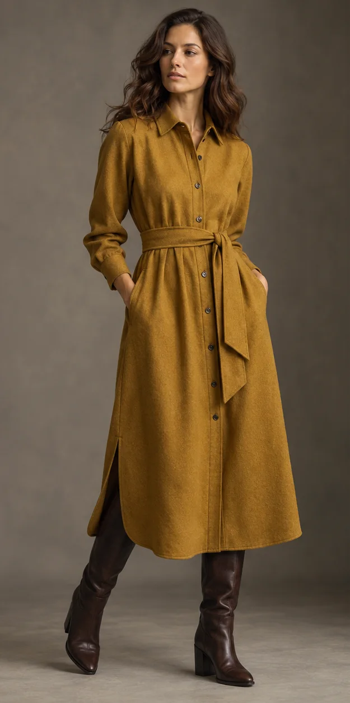
Rising

Rising
Rising
Rising
In Africa stores: North & West Africa: Aug 2028 – Jan 2029 · South Africa: Mar – Aug 2029 (local autumn/winter) · Global AW28 report →
- Long-range outlook. Functional tailoring and technical wool for winter, hidden closures and hybrid boots, with radiant earth deepening into rust and brick.
- Regional reading: lead with the AW28 trends below that suit Africa's climate and buyers.
Global trends to lead with in Africa
Peaking
Peaking
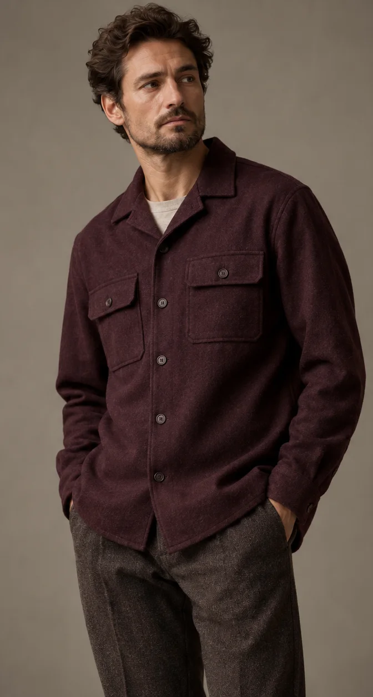
Rising
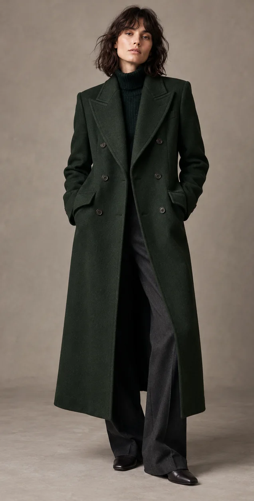
Rising
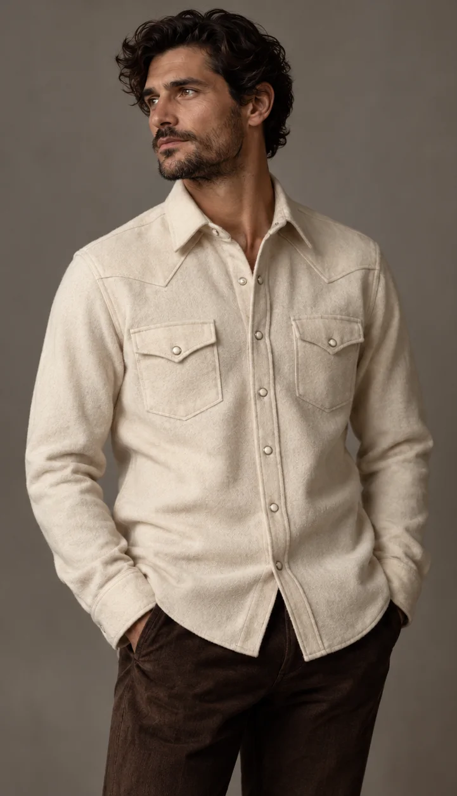
Rising
Emerging
Peaking
Peaking
Upcoming sales & occasions
The big sale dates and buying moments in Africa, with brands making news. Plan drops and markdowns around them. Ramadan and Eid dates depend on moon sighting.
Nigeria & West Africa
- Black FridayLed by online marketplaces.
- "Detty December" in LagosConcerts, parties and weddings for the diaspora season home.
- ChristmasFamily gatherings and new outfits.
Atafo Opened the Lagos Fashion Week 2026 runways with tailoring and Aso-Oke. Fashion Police Nigeria
Ndiiche Named a brand to watch in 2026: repurposed denim and cotton, Igbo culture and inclusive sizing. Marie Claire Nigeria
South Africa
- Soweto Fashion WeekLocal designer showcase.
- Black FridayOne of the biggest trading days of the year.
- Boxing Day (Day of Goodwill) salesSummer holiday and festive clearance.
Mr Price FY2026 revenue up 4.2% to R42.7bn with operating profit above R6bn; about 180 new stores planned. FilingReader
Colour direction for Africa
Five colours to plan with for the coming local season, each with its nearest Pantone TCX reference. Confirm against a physical standard before production.
18-1555 TCX · #B3261ESeen at Lagos Fashion Week 202618-1028 TCX · #6B3F24Tailoring and Aso-Oke19-4027 TCX · #23365EHand-dyed craft15-0948 TCX · #C99A3BFestive and "Detty December" partywear14-1113 TCX · #D9C3A0Kaftans and summer layersTrend momentum in Africa
The 114 Forecut details most relevant to this region, by stage, season by season (heavy winter pieces left out for hot-climate markets). Momentum peaks in SS27.
Trend lifecycle in Africa
How the trends that suit this region move from AW26 to AW28.
| Detail | AW26 | SS27 | AW27 | SS28 | AW28 |
|---|---|---|---|---|---|
| Seersucker and linen jacketsCoats & Jackets | – | Rising | – | Peaking | – |
| Gilded embroidered shirtingTops & Shirts | Emerging | Rising | Peaking | Fading | – |
| Lace-embroidered poplin shirtsTops & Shirts | – | Rising | Peaking | Fading | – |
| Linen and seersucker shirtsShirts & Polos | – | Rising | – | Peaking | – |
| Printed resort shirtsShirts & Polos | Rising | Rising | Rising | Peaking | Fading |
| Grandad collar linen shirtsShirts & Polos | Rising | Rising | Rising | Rising | Peaking |
| Embroidered pocket shirtsShirts & Polos | Rising | Rising | Rising | Rising | Peaking |
| Trompe-l'oeil shirt-print topsTops & Shirts | – | Emerging | Rising | Peaking | – |
| Contrast collars and cuffsTops & Shirts | Rising | Peaking | Fading | – | – |
| Photographic and art printsDresses | Emerging | Rising | Peaking | Fading | – |
Picked for Africa's climate and buyers. Stages follow the international seasons; for when each season reaches stores locally, see the season tabs above.
Key markets
Climate, buying moments and preferences that shape how trends sell.
- Climate
- Hot and humid; rainy season Apr–Oct.
- Key moments
- Detty December, weddings, Eid
- Buyers want
- Statement occasion wear, bold print and colour, tailoring, aso-ebi group dressing.
- Fashion week
- Lagos Fashion Week (28 Oct–1 Nov 2026, theme "CRAFTED")
- Climate
- Temperate; southern-hemisphere seasons.
- Key moments
- Festive summer (Dec), Black Friday
- Buyers want
- Local designer pride, maximalist colour, menswear, denim and streetwear.
- Fashion week
- South African Fashion Week (SS26 shown Mar 2026; AW27 shown Oct 2026, The Forum, Hyde Park)
- Climate
- Mediterranean coast, hot desert interior.
- Key moments
- Ramadan and Eid, summer weddings
- Buyers want
- Modest and occasion wear, kaftans and djellabas, craft embroidery.
- Fashion week
- Casablanca and Cairo events
- Climate
- Mild highland climate (Nairobi, Addis Ababa).
- Key moments
- Year-end holidays, weddings
- Buyers want
- Contemporary African design, handwoven textiles, smart casual.
- Fashion week
- Nairobi events
Climate & influences
Mostly hot: tropical West and Central Africa, highland East Africa, Mediterranean north, and a temperate, southern-hemisphere South Africa.
- African heritage textiles and tailoring traditions
- Diaspora designers in London, Paris and New York
- Circular and craft-led production
Runway & news from Africa
The latest fashion weeks and collections, summarised with links to the original coverage.
Nineteen shows ran on 29 October at the Federal Palace Hotel. Hertunba opened with a black canvas dress with red beaded fringe, a brown sequinned strapless mini with a blush raffia-style fringed skirt and a woven co-ord with sweetheart bustier, flared peplum and sheer lattice cape; Oshobor showed an ombré blue fringe mini with a back train; Ajanéé a pink-and-red striped patchwork shirt dress with an asymmetric hem; Iremitide red beaded halterneck and corseted mermaid dresses; and Cynthia Abila put male models in skirts.
Source: Marie Claire Nigeria
The Africa International Film Festival runs in Lagos from 1 to 7 November 2026, a key red-carpet week for Nollywood and Afrobeats style ahead of December wedding and party season.
Source: ThisDay
Main runway shows run 29–31 October at the LagosFW Tents, Federal Palace Hotel, Victoria Island, after a 28 October welcome party, with offsite presentations on 1 November. Thursday's line-up included Hertunba, Maliko, Iremide, Christie Brown, Cute Saint, Nkwo and Imprint South Africa; Friday and Saturday bring Pepper Row, Jermaine Bleu, Bloke, Fruché, Ejiro Amos Tafiri and Ugo Monye. Ahead of the runways Atafo showed SS27 'A Measure of Her' privately: structured blazers, tailored trousers, pleated and asymmetric midi and mini skirts in dark blue, brown, white and subtle stripes. Handwoven Aso-Oke, Akwete and indigo Adire, corsets and oversized outerwear over fitted bases are the week's craft talking points.
Source: VerseNews Nigeria, Fashion Police Nigeria, BellaNaija
SA Fashion Week showed Autumn/Winter 2027 at The Forum, Hyde Park, Johannesburg, moving away from the all-black, monochrome and denim looks of recent seasons towards personal storytelling. Thabo Makhetha showed kaftans, blankets, capes and kimonos; Colleen Eitzen A-line silhouettes; Gert-Johan Coetzee bridal and baroque-flavoured shapes; Michael Reid debuted under his own name with deconstructed, printed pieces. Ephymol, Zayoni and Sumo reworked denim (handcrafted and unisex), and palettes included primary colours (Zour), oranges with blues (Emelia D) and ochre with azure (Anunes).
Source: TimesLIVE
Soweto Fashion Week runs 5–7 November 2026 at Soweto Theatre, Jabulani: an emerging-designers bloc with University of Johannesburg and Tshwane University of Technology students, then main shows including Mbobo Movement (patchwork and denim in bold colours), House of Ayanda and Wanda Wear. Lagos Fashion Week follows from 28 October to 1 November.
Source: Hype Magazine, The Rio Times
Runs 28 October–1 November under the theme "CRAFTED: Heritage. Innovation. Circular Futures.", putting making, traditional skills and circularity at the centre.
Source: FAB L'Style
The second South Africa Fashion Awards were held on 3 October 2026 at the Infinity Theatre, Hotel Sky Sandton, with winners chosen by public vote. Palesa Mokubung won Best Fashion Designer and Tebogo Selebi Best Emerging Designer; Woolworths took both Best Fashion Retailer and Best Fashion E-Commerce Brand; GALXBOY won Best Streetwear Brand, Veldskoen Best Footwear Brand and Something Good Studio Best Sustainable Fashion. Best Fashion Campaign went to Foschini x Rich Mnisi (Foschini 100 x Rich Mnisi 10).
Source: Bizcommunity
'80s maximalism, puff and bubble silhouettes, cinched waists, and dark chocolate brown as the "new black".
Source: The Post (IOL)